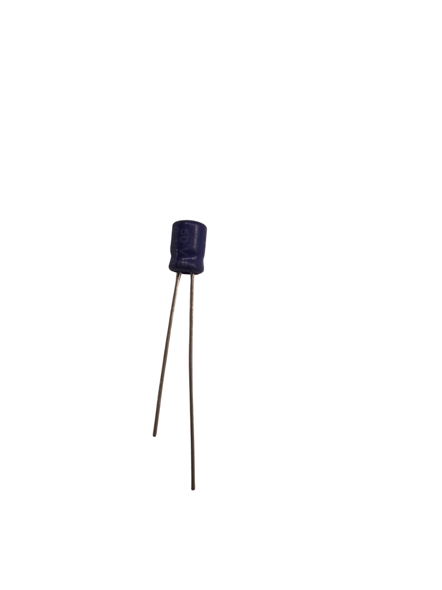
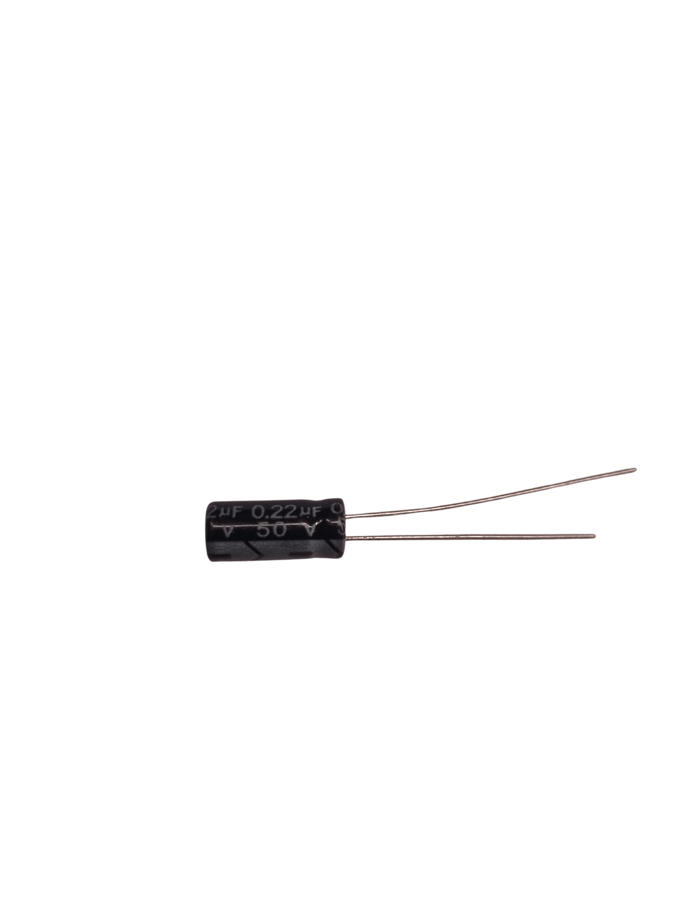
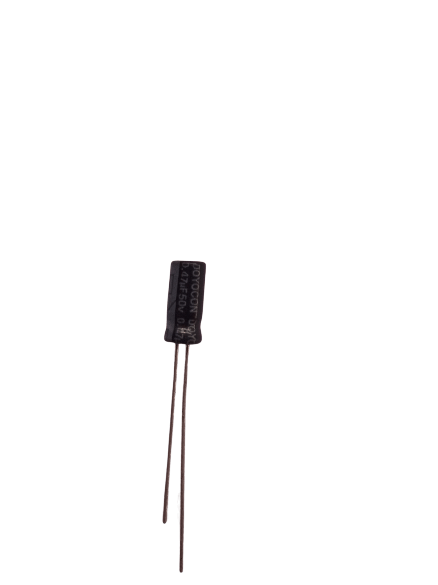
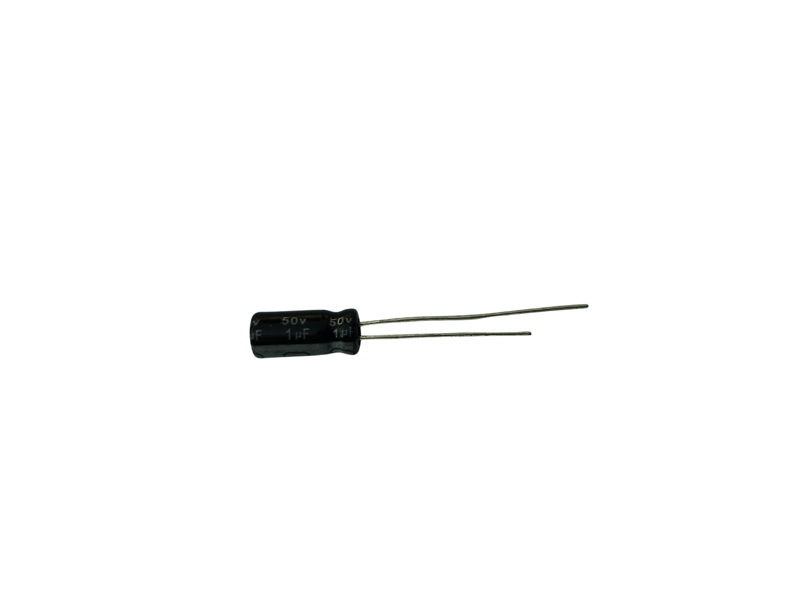

NB: Ajoutez au panier puis cliquez sur le panier pour finaliser l'achat par WhatsApp!
Bienvenue sur notre catalogue complet de condensateurs électrolytiques. Que vous soyez à Lomé, Kara ou ailleurs au Togo, retrouvez toutes les valeurs (0.1µF à 1000µF) et tensions (10V à 50V) pour vos réparations de téléviseurs, alimentations, équipements audio et bien plus. Livraison rapide partout au TOGO.
Filtrer les condensateurs
Capacité (µF)
Tension (V)
24 produit(s) trouvé(s)
Aucun produit trouvé
Essayez de modifier vos critères de recherche

Condensateur 0.1μF
Idéal pour le filtrage haute fréquence dans les téléviseurs et alimentations. Tension: 50V • Température: +105°C

Condensateur 0.22μF
Souvent utilisé dans les étages audio et les filtres passe-bas. Tension: 50V • Température: -40°C à +105°C

Condensateur 0.47μF
Parfait pour le découplage dans les alimentations à découpage. Tension: 50V • Température: +105°C

Condensateur 1μF
Utilisé dans de nombreux circuits électroniques, du filtrage au couplage. Tension: 50V • Température: +105°C

Condensateur 2.2μF
Souvent utilisé dans les oscillateurs et les filtres actifs. Tension: 50V • Température: +105°C

Condensateur 3.3μF
Idéal pour les circuits de temporisation et de filtrage. Tension: 50V • Température: +105°C

Condensateur 4.7μF
Convient aux environnements sévères (automobile, industriel). Tension: 50V • Température: -40°C à +105°C

Condensateur 10μF
Utilisé dans les régulateurs de tension et les filtres de sortie. Tension: 25V • Température: +105°C
Condensateur 10μF
Version 50V, idéale pour les circuits nécessitant une tension plus élevée. Tension: 50V • Température: -40°C à +105°C

Condensateur 22μF
Souvent utilisé dans les alimentations de cartes mères et périphériques. Tension: 16V • Température: +105°C

Condensateur 22μF
Adapté aux alimentations 24V et circuits de filtrage. Tension: 25V • Température: +105°C

Condensateur 33μF
Parfait pour le couplage audio et le filtrage dans les petits amplis. Tension: 16V • Température: +105°C

Condensateur 47μF
Utilisé dans les circuits numériques et le découplage des cartes. Tension: 10V • Température: -40°C à +105°C

Condensateur 47μF
Idéal pour les alimentations 24V et les convertisseurs. Tension: 25V • Température: -40°C à +105°C

Condensateur 47μF
Souvent utilisé dans les étages de sortie des amplis audio. Tension: 50V • Température: +105°C

Condensateur 100μF
Parfait pour le lissage dans les alimentations basse tension. Tension: 16V • Température: -40°C à +105°C

Condensateur 100μF
Utilisé dans les alimentations 24V et les convertisseurs DC-DC. Tension: 25V • Température: -40°C à +105°C

Condensateur 220μF
Idéal pour le découplage sur les cartes numériques 5V/3.3V. Tension: 10V • Température: -40°C à +105°C

Condensateur 220μF
Parfait pour les alimentations de puissance moyenne. Tension: 25V • Température: +105°C

Condensateur 330μF
Utilisé dans les alimentations pour lisser les tensions. Tension: 25V • Température: +105°C

Condensateur 470μF
Souvent utilisé sur les cartes mères et alimentations PC. Tension: 10V • Température: -40°C à +105°C

Condensateur 470μF
Idéal dans les étages de filtrage des amplis audio. Tension: 16V • Température: +105°C

Condensateur 680μF
Utilisé dans les alimentations nécessitant une forte capacité de lissage. Tension: 16V • Température: +105°C

Condensateur 1000μF
Parfait pour le filtrage principal dans les alimentations et onduleurs. Tension: 16V • Température: -40°C à +105°C